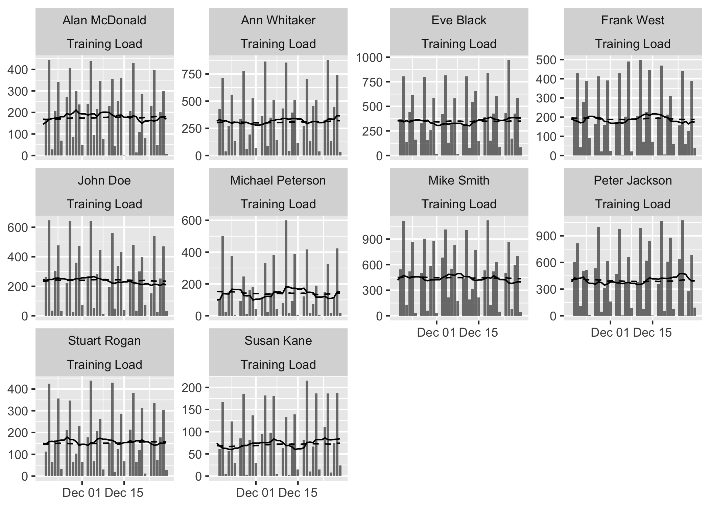
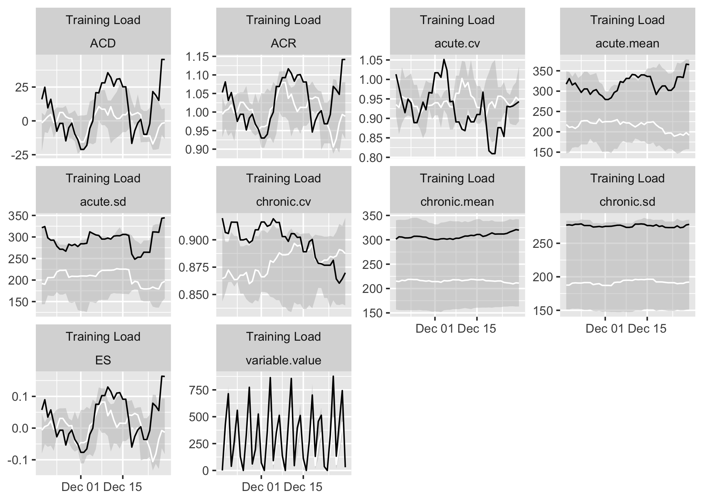

Athlete monitoring data often comes in a form of time series or panel data. The goal of athletemonitoring package is to help in preparing these types of datasets using contemporary best practices which involve dealing with missing values, aggregating data on a day-level, creating rolling averages and finally providing visualizations.
Installation
You can install the released version of athletemonitoring from CRAN when it is available with:
install.packages("athletemonitoring")
And the development version from GitHub with:
# install.packages("devtools") devtools::install_github("mladenjovanovic/athletemonitoring")
Example
To be added, but while you wait, here is the example from the documentation:
require(athletemonitoring) #> Loading required package: athletemonitoring # Load monitoring data set data("monitoring") # Filter out only 'Training Load' monitoring <- monitoring[monitoring$Variable == "Training Load", ] # Convert column to date format (or use numeric) monitoring$Date <- as.Date(monitoring$Date, "%Y-%m-%d") # Run the athlete monitoring data preparation prepared_data <- prepare( data = monitoring, athlete = "Full Name", date = "Date", variable = "Variable", value = "Value", acute = 7, chronic = 42, # How should be multiple day entries summarised? day_aggregate = function(x) { sum(x, na.rm = TRUE) }, # Rolling estimators for Acute and Chronic windows rolling_estimators = function(x) { c( "mean" = mean(x, na.rm = TRUE), "sd" = sd(x, na.rm = TRUE), "cv" = sd(x, na.rm = TRUE) / mean(x, na.rm = TRUE) ) }, # Additional estimator post-rolling posthoc_estimators = function(data) { data$ACD <- data$acute.mean - data$chronic.mean data$ACR <- data$acute.mean / data$chronic.mean data$ES <- data$ACD / data$chronic.sd # Make sure to return the data return(data) }, # Group summary estimators group_summary_estimators = function(x) { c( "median" = median(x, na.rm = TRUE), "lower" = quantile(x, 0.25, na.rm = TRUE)[[1]], "upper" = quantile(x, 0.75, na.rm = TRUE)[[1]] ) } ) # Get summary prepared_data #> Athlete monitoring data with the following characteristics: #> #> 10 athletes: #> Alan McDonald, Ann Whitaker, Eve Black, Frank West, John Doe, Michael Peterson, Mike Smith, Peter Jackson, Stuart Rogan, Susan Kane #> #> 363 days: #> From 18263 to 18625 #> #> 1 variables: #> Training Load #> #> 10 estimators: #> variable.value, acute.mean, acute.sd, acute.cv, chronic.mean, chronic.sd, chronic.cv, ACD, ACR, ES summary(prepared_data) #> # A tibble: 10 x 13 #> athlete variable `Day entries` Missing `Start date` `Stop date` Mean SD #> <chr> <chr> <int> <int> <date> <date> <dbl> <dbl> #> 1 Alan M… Trainin… 312 51 2020-01-02 2020-12-29 202. 133. #> 2 Ann Wh… Trainin… 312 51 2020-01-02 2020-12-29 353. 247. #> 3 Eve Bl… Trainin… 312 51 2020-01-02 2020-12-29 401. 257. #> 4 Frank … Trainin… 312 51 2020-01-02 2020-12-29 218. 155. #> 5 John D… Trainin… 312 51 2020-01-02 2020-12-29 272. 207. #> 6 Michae… Trainin… 312 51 2020-01-02 2020-12-29 177. 167. #> 7 Mike S… Trainin… 312 51 2020-01-02 2020-12-29 514. 344. #> 8 Peter … Trainin… 312 51 2020-01-02 2020-12-29 470. 330. #> 9 Stuart… Trainin… 312 51 2020-01-02 2020-12-29 177. 122. #> 10 Susan … Trainin… 312 51 2020-01-02 2020-12-29 87.6 68.8 #> # … with 5 more variables: Min <dbl>, Max <dbl>, Median <dbl>, IQR <dbl>, #> # MAD <dbl> ## Plots # Table plot # Produces formattable output with sparklines # This will not work in the readme file, so just copy paste to your console #plot( # prepared_data, # type = "table", # # # Use to filter out estimators # estimator_name = c("acute.mean", "chronic.mean", "ES", "chronic.sd", "chronic.cv"), # # # Use to filter out athlete # # athlete_name = NULL, # # # Use to filter out variables # #variable_name = NULL, # # # Show last entries # last_n = 42, # # # Round numbers # digits = 2 #) # Bar plot # To plot group average plot( prepared_data, type = "bar") #> Plotting average across athletes. Please select athlete or use `trellis=TRUE` #> Warning: Removed 6 rows containing missing values (geom_bar). #> Warning: Removed 42 row(s) containing missing values (geom_path). #> Warning: Removed 42 row(s) containing missing values (geom_path).

# To plot per athlete, use trellis argument plot( prepared_data, type = "bar", trellis = TRUE) #> Warning: Removed 60 rows containing missing values (geom_bar). #> Warning: Removed 420 row(s) containing missing values (geom_path). #> Warning: Removed 420 row(s) containing missing values (geom_path).
# To filter out athletem variable and add Acute and Chronic lines to the group average: plot( prepared_data, type = "bar", # To filter out athletes # athlete_name = NULL, # To filter out variable # variable_name = NULL, # Add acute mean acute_name = "acute.mean", # Add chronic mean chronic_name = "chronic.mean", # Plot last n entries/days last_n = 42) #> Plotting average across athletes. Please select athlete or use `trellis=TRUE` #> Warning: Removed 6 rows containing missing values (geom_bar).
# If you want to plot for each athlete, use trellis=TRUE plot( prepared_data, type = "bar", acute_name = "acute.mean", chronic_name = "chronic.mean", last_n = 42, trellis = TRUE) #> Warning: Removed 60 rows containing missing values (geom_bar).

# Line plots # These plots represent summary of the rollins estimators plot( prepared_data, type = "line", # To filter out athletes # athlete_name = NULL, # To filter out variables # variable_name = NULL, # To filter out estimators # estimator_name = NULL, # Tell graph where the lower group estimator is # which is in this case 25%th percentile of the group group_lower_name = "group.lower", # The name of the centrality estimator of the group group_central_name = "group.median", # Tell graph where the upper group estimator is # which is in this case 75%th percentile of the group group_upper_name = "group.upper", # Use trellis if you do not plot for a single individual trellis = TRUE)

# Previous chart looks messy because it plot all athletes # To avoid that, filter out only one athlete plot( prepared_data, type = "line", # To filter out athletes athlete_name = "Ann Whitaker", group_lower_name = "group.lower", group_central_name = "group.median", group_upper_name = "group.upper", trellis = TRUE)
